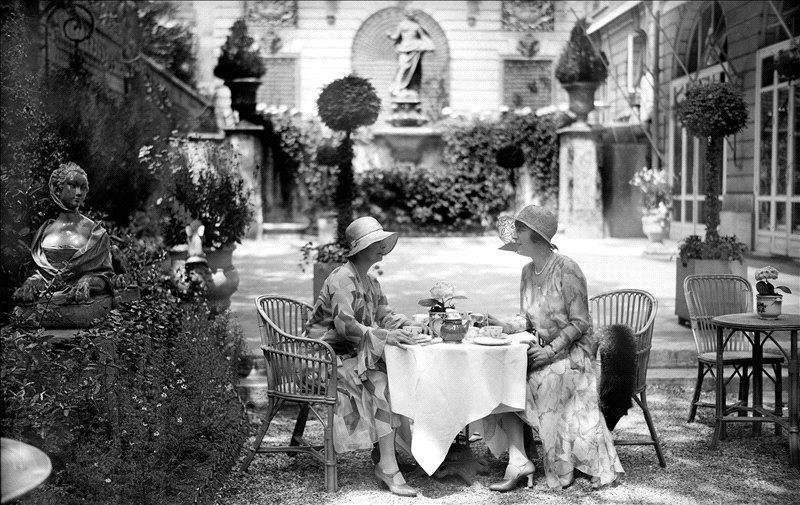

Herbatka w hotelu Ritz
Spotkania przy herbacie, uprzejme zaproszenia, rozliczne wizyty, bukiety kwiatów z bilecikami „à tout à l’heure!”.
„Każdego dnia widuję całą listę osób, wystarczająco długą, by obsadzić sztukę w pięciu aktach” — pisał Rilke w liście do księżnej Marie von Thurn und Taxis podczas swego ostatniego pobytu w Paryżu w roku 1925.
Spotkanie przy herbacie w ogrodzie paryskiego hotelu Ritz, lata dwudzieste XX wieku